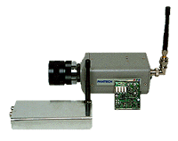

| PWT-2400FI (Transmitter) / PWR-2400FE (Receiver) With 2.4GHz frequency, the wireless camera enables you to transmit high quality Audio and Video to monitors without coaxial cable. |
|
|  | -Frequency : 2.4 GHz -4-Channel Audio / Video -FM modulation method -Transmitter's RF output power :10mW -T-ransmission distance : 100m -Low power conumption -Easy installation |
| Designed for video surveillance system, Pantech's cameras meet your
various purposes at business, offices, shops, garages and individule homes. - Internal / linelock method - Electronic iris / auto iris selectable - Gamma = 0.45 - AGC - B/W Min. Sensitivity : under 0.3 Lux - Color Min. Sensitivity : under 2.5 Lux |
||
|
PAC/E-1211(B/W) |
DOME CAMERA(B/W) |
PAN/P-3211(COLOR) |

 |
Perfect for Video Tele-Conferencing, Surveillance, Digital Video or
any application that needs high quality, affordable both PAL and NTSC color input. Design for video conferencing and video capture applications, Patech's PCN/P-521 features a 270,000 (NTSC) ad 320,000 (PAL) resolution. |
| Pantech's new advanced DSP Color Modules, smaller in size, lets operations
such as Iris, Back Light Compensation and Whiter Balance adjust automatically, making it easy to adapt to environmental conditions. B/W Module has standard resolution of 270,000 pixels with built-in Electronic Iris, Mirror Image Capability, Low Power Consumption, and Flickerless Feature. B/W Module : PME/C-121,221,721,921 (EIA/CCIR) Color Module : PMN/P-221,421,621 (NTSC/PAL) |
|

 |
 |
Copyright 1996 Pantech. All Rights Reserved.